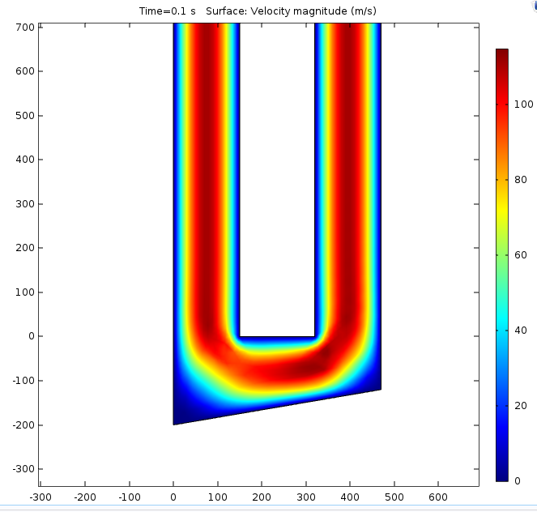
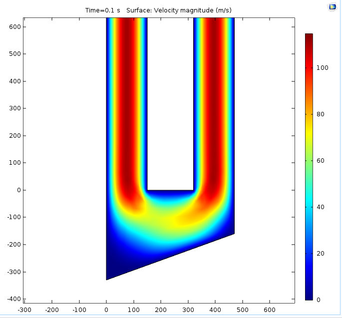
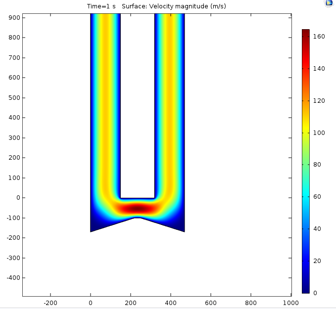
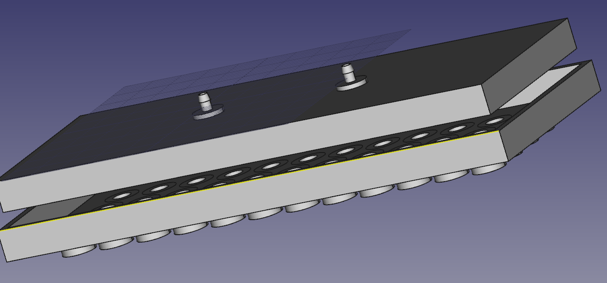

External Deliverables
{kind=link}
Test design that never reached realization because of cell constraints.

This is an external memorandum referencing what I have learned, and things that will not work for a Wasatch flow design in microfluidic flow with the goal of turbulence.
Internal Deliverables
- 
10 Degree Slant Wasatch Design
- 
Wasatch_Design 20 Degree Slant
- 
Wasatch Design 18 Degree Cone
{kind=link}
{kind=link}
{kind=link}

{kind=link}
This is the 3D model of the fluid splitter that I specified in my printhead test design. It takes two, 1/16 inch inner diameter tubes and splits them to 1/32 inner diameter tubes to the target.
Difficulties This Semester
This semester, I learned more about failure than success. Many things didn't really pan out due to a variety of factors. Our cell cultures were not growing at a usable rate, and since we had to revert to an older passage number initially due to the winter break, the cells also didn't seem to agregate. This definitely slowed down any progress that could be made as far as culture experiments went. I had designed an environment in which we would be able to flow cell media through our printhead and flow waste out, theoretically, but it wasn't able to be tested because the cells were not growing well enough or clumping together enough to be distributed into the well molds. I didn't want to flow straight media through there as it would only test the seals on the environment, and wouldn't actually test viability for the expense that our cell growth media was.
In the area of simulation, the intent was to take the code that one of John-Luke's professors had developed for particles in fluid application, and revamp it so it is actually usable and user friendly. After a few attempts at contact, it seemed as though she wouldn't share any specifics in the code, and was even wary about letting me take the code in general to figure it out myself. I found the base program that she was working with which was called OpenFoam. This was difficult to set up, and because of time constraints, I didn't have a chance to properly learn it. Instead, I simulated different flow architectures in COMSOL negating the particles inside the fluid. What I was attempting to discern from this was whether it is viable to attempt vortex creation inside of the wells with our current printhead. This will be continued in the simulation paper to the left